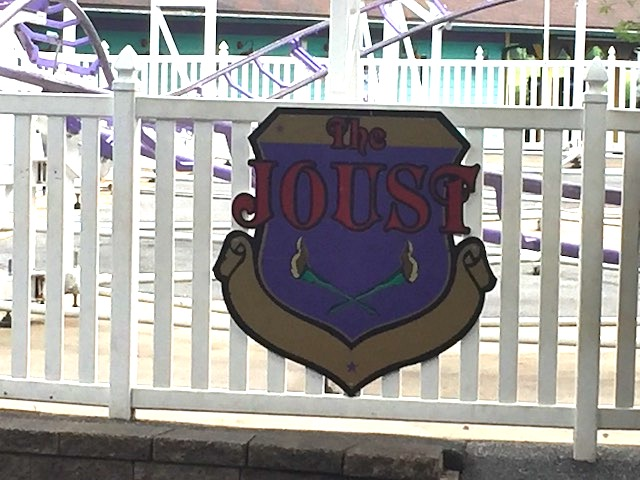

| |
Joust Review

We're here at Dutch Wonderland. I know the entire park is credit whoring. But for the hardcore credit whores doing the real kiddy coasters, we have Joust to ride. After cramming into the small cars, we're off. After climbing up the curved lifthill, we then curve into the first drop. Wee I guess. You then go into a small turnaround that sort of looks like the lifthill. This may suprise you, but you actually get a couple of laterals going through that turn. Unfortunately, that just means that these laterals hurt. Ugh. This is NOT a fun kiddy coaster. After that you go through another turn with a couple laterals before turning into the station. I know it's a kiddy coaster, but this is still one of the worse ones. UNQUESTIONABLE 1 and done.
1/10
Location: Dutch Wonderland
Opened: 1998
Built by: Chance Rides
Last Ridden: June 26, 2021
Joust Photos


Home
|